AIの「なぜ？」と「なに？」がわかるテキスト
第1章：AIは魔法？それともただの計算機？- その正体に迫る
1-1. なぜ、今「AIの仕組み」を知る必要があるのか？

「AIって、なんだか難しそう…」「自分には関係ないかな？」
もしかしたら、あなたはそう思っているかもしれません。でも、実はAIは、もう私たちのすぐそばにいる、とっても身近な存在なんです。
あなたがスマホで「今日の天気は？」と尋ねる時、AIがあなたの言葉を理解しています。ネットショッピングで「あなたへのおすすめ」が表示されるのも、AIがあなたの好みを学習した結果です。AIは、まるで空気のように私たちの暮らしに溶け込み、日々を便利にしてくれています。
だからこそ、私たちはAIのことを「知らないまま」でいてはいけません。車の運転の仕方を知らずに高速道路を走るのが危険なように、AIの仕組みや特性を知らないままでは、その恩恵を最大限に受けることも、潜んでいるリスクから身を守ることもできないからです。この講座は、そのための「優しい運転教習所」だと思ってくださいね。
1-2. AIの”頭の中”を覗いてみよう
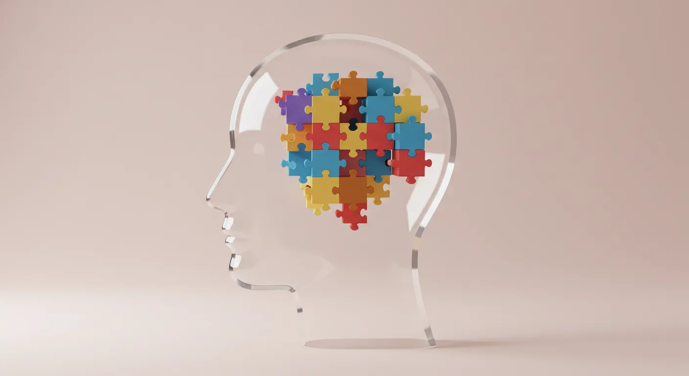では、AIはどうやって物事を「学習」しているのでしょう？
その仕組みは、実はとってもシンプル。「大量のお手本（データ）を見て、その中にあるパターンや法則を自分で見つけ出す」ということを、ものすごいスピードでやっているだけなんです。
例えば、AIに「猫の写真」をたくさん見せるとします。最初は、AIにとってそれはただの色の点の集まりです。しかし、何百万枚もの写真を見続けるうちに、「フワフワした毛」「とがった耳」「長いしっぽ」といった、猫に共通する”特徴”を、AIが自分で見つけ出していきます。
つまりAIは、人間が一つひとつルールを教えなくても、データの中から自ら「答えの法則」を発見できる、ものすごく勤勉で、素直な学習者なのです。
1-3. AIと「人間」の決定的な違い
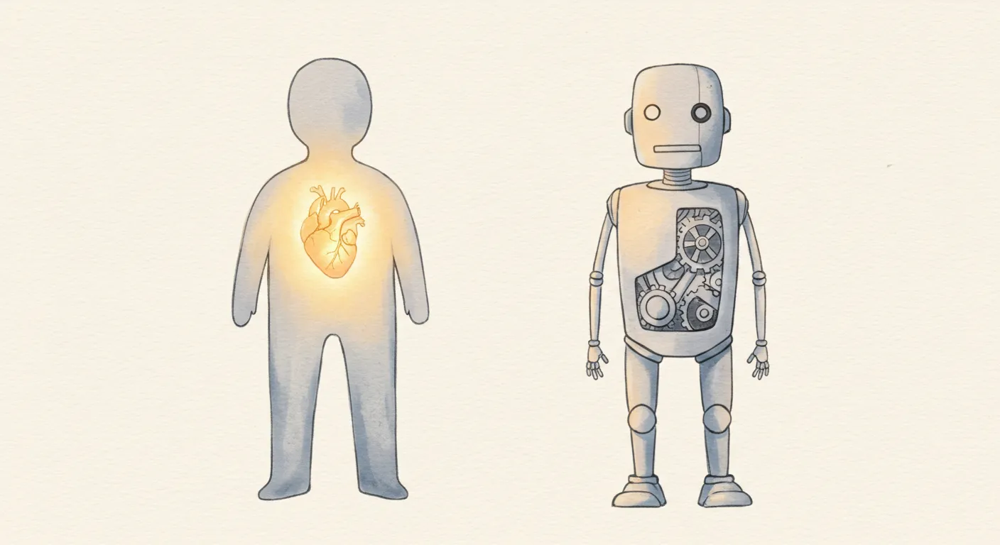AIは人間のように学習しますが、決して人間そのものではありません。両者の間には、決して越えられない、３つの大きな違いがあります。
① AIには「身体」がない
私たちは、熱いお茶を飲んで「あちっ！」と感じたり、花の香りをかいで「いい匂い」と感じたりします。これは、五感を持つ身体があるからです。しかし、AIには身体がありません。AIにとっての「りんご」とは、”赤い” ”丸い” ”甘い”といった、単なる「言葉のデータ」の集まりでしかなく、その味や食感を本当に”感じる”ことはできないのです。
② AIには「心」がない
AIは、感動的な映画のあらすじを要約することはできても、その物語に涙を流すことはありません。なぜなら、AIには「嬉しい」「悲しい」といった感情、つまり「心」がないからです。AIが生み出す言葉や絵は、あくまで過去の膨大なデータを計算して、最も”それらしい”組み合わせを提示しているにすぎません。
③ AIには「意識」がない
AIは「私はAIです」と答えることができます。しかし、それは「オウムが『おはよう』と言う」のと同じです。自分が何者で、なぜここに存在するのか、といった「意識」や「自我」は持っていません。AIは、与えられた問いに答える、非常に高度な計算機ではありますが、「自分」という存在について悩むことはないのです。
1-4. このテキストが、あなたに約束すること
AIの正体が、少しだけ見えてきたでしょうか。
AIは、決して万能の魔法ではありません。しかし、その仕組みと限界を知れば、これほど頼りになる「道具」もありません。
このテキストを最後まで読み終えた時、あなたはこんな力を手にしていることを、ここにお約束します。
【このテキストが、あなたに約束する３つのこと】
- AIの”頭の中”が、手に取るようにわかる
「機械学習」や「ディープラーニング」といった、ニュースでよく聞くけど分からなかった言葉の意味が、専門用語を一切使わずに、スッキリと理解できます。あなたはもう、AIを「謎の黒い箱」ではなく、仕組みの分かった「透明な箱」として見ることができるようになります。 - AIニュースの”裏側”が、見えるようになる
「AIが医療に革命を！」「AIに仕事が奪われる！？」といったニュースを見ても、ただ驚いたり不安になったりするだけではなくなります。そのニュースが、AIのどんな技術に基づいた話で、どんな可能性（光）と、どんな課題（影）をはらんでいるのかを、あなた自身の頭で冷静に考えられるようになります。 - AI時代を生き抜くための「羅針盤」が手に入る
AIの進化は、私たちの社会を、良くも悪くも大きく変えていきます。この変化の激しい時代の中で、何に期待し、何を警戒し、そして私たち人間は何をすべきなのか。AIの光と影の両面を正しく理解することで、未来を恐れるのではなく、未来を創る側になるための、確かな羅針盤を手に入れることができるでしょう。
さあ、準備はよろしいでしょうか。
次の章では、AIの進化の歴史をたどりながら、現代のAIがいかにしてこれほどまでの知性を手に入れたのか、その秘密の物語を紐解いていきましょう！
第2章：AIはこうして”天才”になった - 進化の物語
今のAIが突然現れたわけではありません。そこには、たくさんの研究者たちの挑戦と、何度もの「冬の時代」を乗り越えた、長い長い物語があるのです。AIがどのようにして賢くなっていったのか、その成長の軌跡を一緒に見ていきましょう。
2-1. 最初のAIブーム：「ルール」を教え込む時代
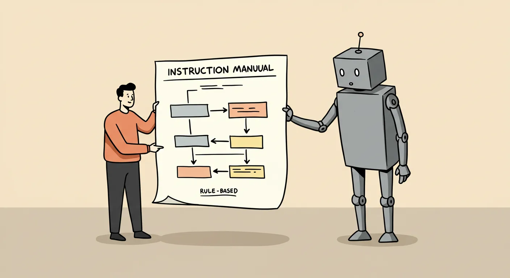昔々のAIは、まるで「ものすごく頭が固い、マニュアル通りの執事」のようでした。人間が、「もしAという状況なら、Bという行動をとりなさい」というルールを、一つひとつ丁寧に、すべて書き出して教え込む必要があったのです。
例えば、チェスを指すAIを作るなら、「この駒がここにあって、相手の駒がそこにあるなら、次はこの駒をこう動かす」といった、考えられるすべてのパターンをプログラムしていました。この方法は、迷路の脱出や簡単なゲームなど、ルールがはっきり決まっている世界ではとても強力でした。しかし、現実の世界はもっと複雑です。例えば「猫」を認識させようにも、「猫のルール」をすべて言葉で書き出すのは不可能ですよね。この「ルールの壁」にぶつかり、AIの研究は一度、停滞してしまいます。
2-2. 冬の時代を乗り越えて：「お手本」から学ばせる時代へ
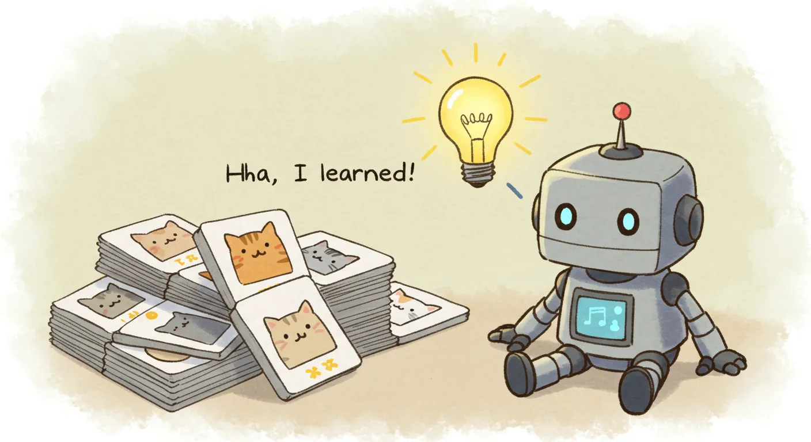長い冬の時代を経て、AI研究者たちは画期的なアイデアにたどり着きます。それが、第1章でお話しした「お手本（データ）から学ばせる」という方法、「機械学習」の登場です。
これは、AIの育て方を180度変える大転換でした。ルールを一つひとつ教え込むのではなく、「これが猫の写真だよ」とお手本をたくさん見せて、猫の特徴をAI自身に発見させるのです。これは、まるで私たちが子供に「ワンワンだよ」と犬の絵本を何度も見せて教えるのと同じですね。この方法によって、AIはこれまで苦手だった、曖昧で複雑な現実世界のことを少しずつ学べるようになったのです。
2-3. 革命の瞬間：「ディープラーニング」の誕生
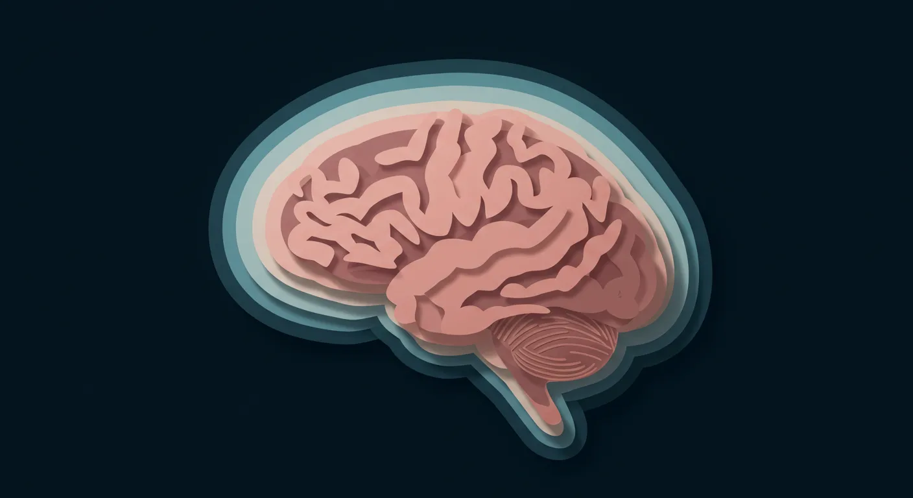そして2010年代、AIの世界に真の革命が起こります。「ディープラーニング（深層学習）」という、ブレークスルーの誕生です。これは機械学習の一種ですが、その賢さは段違いでした。
ディープラーニングの仕組みは、人間の脳の神経細胞（ニューロン）の繋がりをヒントにしています。たくさんの層（レイヤー）を深く重ねることで、AIが物事をより複雑で、より深いレベルで理解できるようになったのです。
この革命的な技術の登場により、AIは画像認識や音声認識の精度を飛躍的に向上させ、人間を超えるほどの能力を発揮する分野も現れ始めました。
2-4. そして「生成AI」の時代へ
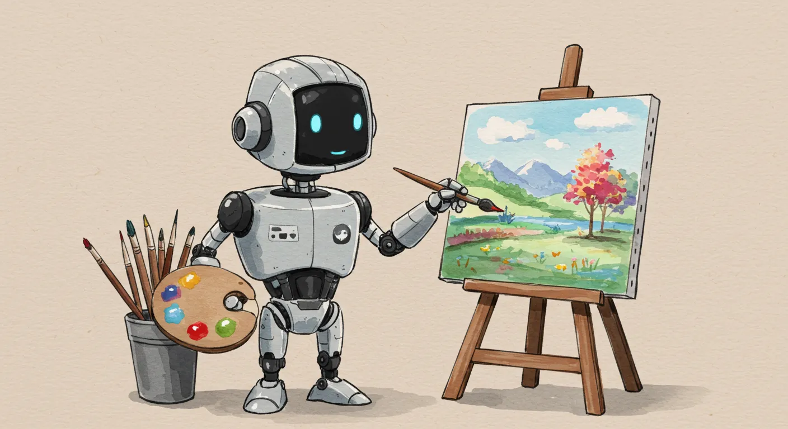ディープラーニングによって、大量のデータから物事の”本質”を学べるようになったAIは、ついに次のステージへと進化します。それが、今まさに私たちが生きる「生成AI」の時代です。
生成AIは、学んだ知識を元に、新しいものをゼロから「創り出す」ことができます。たくさんの小説を読んだAIがオリジナルの物語を書いたり、世界中の名画を学んだAIが誰も見たことのない絵を描いたり…。これまで人間にしかできないと思われていた「創造」の領域に、AIが足を踏み入れたのです。ChatGPTや画像生成AIは、まさにこの技術の最先端を走っています。この進化の物語は、まだ始まったばかりなのです。
第3章：AIがもたらす未来 - わたしたちの暮らしの「光」
AIの進化は、まるで私たちの社会に差し込む、まぶしい光のようです。これから私たちの暮らしが、どのように便利で、豊かになっていくのか。AIがもたらす未来の「光」の側面を、一緒に見ていきましょう。
3-1. 医療の未来：「AIドクター」が、見えない病を見つけ出す
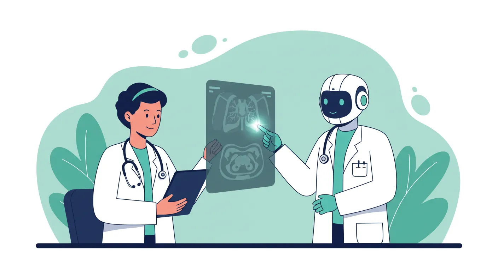医療の現場では、AIが”第3の目”となって、お医者さんを力強くサポートします。例えば、レントゲンやCTスキャンなどの画像をAIが解析し、人間の目では見逃してしまうほど小さな病気の兆候を発見してくれるのです。
これは、熟練の医師が何十年もかけて培った経験や知識を、AIが一瞬で学習してしまうようなもの。これにより、病気の早期発見率が劇的に向上し、これまで助からなかった命が救われる未来がやってきます。AIは、私たち一人ひとりの健康を守る、頼もしいパートナーになるでしょう。
3-2. 交通の未来：「AIドライバー」が、事故のない社会を創り出す
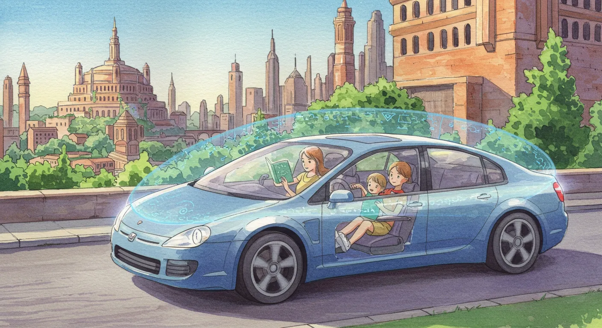自動車の自動運転技術も、AIがもたらす大きな光の一つです。車に搭載されたAIが、カメラやセンサーを使って、周囲の状況を360度、24時間休みなく監視します。人間のドライバーのように「うっかり」や「見落とし」をすることがありません。
渋滞や交通事故の多くは、人間のちょっとしたミスが原因で起こります。AIドライバーが普及すれば、悲しい交通事故がゼロになるだけでなく、面倒な渋滞からも解放され、移動時間はもっと快適で安全なものに変わっていくはずです。
3-3. 仕事の未来：「AIアシスタント」が、退屈な作業から人間を解放する
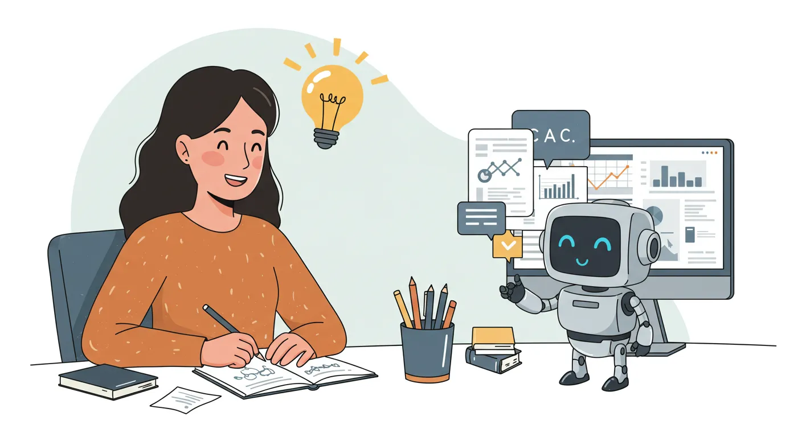私たちの働き方も、AIによって大きく変わります。これまで多くの時間を費やしてきた、単純で繰り返しの多い作業を、AIアシスタントが肩代わりしてくれるようになるからです。例えば、こんな作業です。
- 会議の音声データからの、議事録作成
- 大量のアンケート結果の、データ入力と集計
- 取引先への、定型的なお礼メールの作成
- 膨大な資料の中から、関連する情報だけを抜き出すリサーチ作業
こうした「作業」をAIに任せることで、私たち人間は、もっと創造的で、もっと人間にしかできない大切な仕事、例えば「新しいアイデアを考える」「お客様と心を通わせる」といったことに、集中できるようになるのです。AIは、私たちの仕事を奪うのではなく、仕事の”質”を高めてくれる存在なのです。
3-4. 学びの未来：「AIチューター」が、一人ひとりに最適な教育を届ける
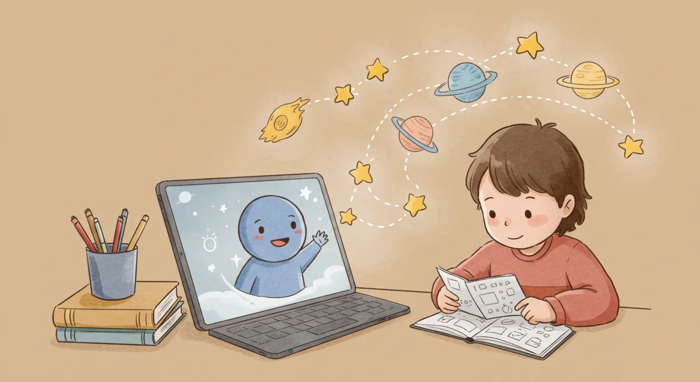教育の分野でも、AIは大きな可能性を秘めています。AIチューター（家庭教師）が、生徒一人ひとりの学習の進み具合や、苦手なポイントを正確に把握し、その子にピッタリ合った問題を出題したり、最適な学習プランを提案してくれたりします。
これまでは、クラス全員が同じペースで授業を受けるしかありませんでした。しかしAIの登場で、「分からないまま授業が進んでしまう」ということがなくなり、誰もが自分のペースで、楽しく学びを深めていけるようになります。AIは、学びの格差をなくし、すべての子どもたちの可能性を最大限に引き出す、最高の先生になってくれるでしょう。
第4章：AIがもたらす未来 - わたしたちが向き合うべき「影」
どんなに明るい光にも、必ず影ができるように、AIの進化にも私たちが注意深く向き合わなければならない「影」の側面があります。未来を正しく見つめるために、これらの課題から目をそらさずに、しっかりと考えていきましょう。
4-1. プライバシーの危機：「AI監視社会」の足音
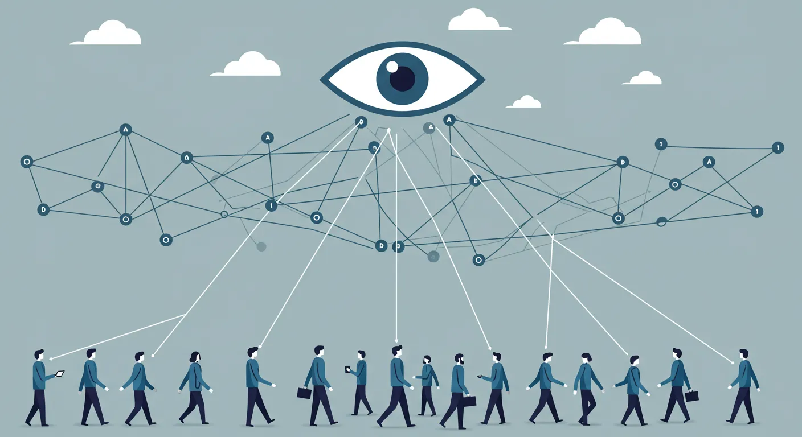街中の防犯カメラにAIの顔認証技術が組み合わされれば、犯罪の抑止に役立つかもしれません。しかし、その一方で、「誰が、いつ、どこで、何をしていたか」という個人の情報が、常に誰かに把握されてしまう社会になる危険性もはらんでいます。
便利なサービスと引き換えに、私たちは気づかないうちに、自分のプライバシーを少しずつ手放しているのかもしれません。AIの便利さと、個人の自由。そのバランスをどうとっていくのか、社会全体で考えていく必要があります。
4-2. 雇用の喪失と格差：「AIに仕事を奪われる」という現実
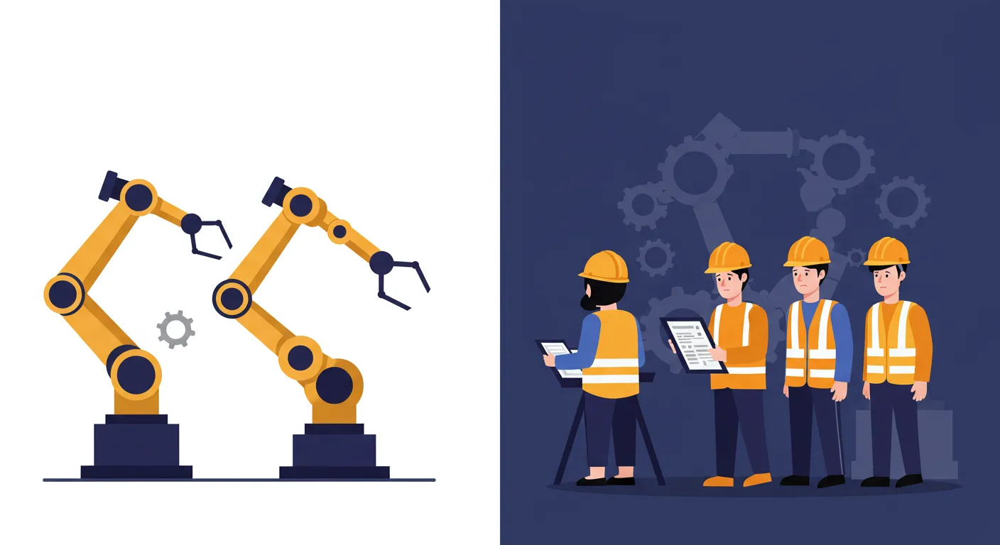第3章で、AIが退屈な作業から人間を解放するとお話ししましたが、それは同時に、これまでその作業を仕事にしてきた人々の雇用が失われる可能性も意味します。特に、データ入力や工場の単純作業など、ルール化しやすい仕事は、AIやロボットに置き換わっていくスピードが速いと考えられています。
AIを使いこなせる人と、そうでない人との間で、経済的な格差がさらに広がってしまう恐れもあります。新しい時代に必要なスキルを誰もが学べるような、社会的なサポートが不可欠です。
4-3. AIが生み出す「偏見」：それは誰の責任か？
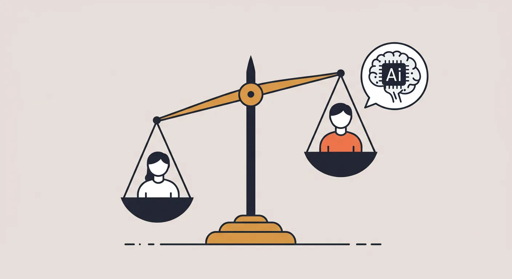AIは、人間が与えた過去のデータから学習します。もし、そのデータの中に、社会の古い偏見や差別が紛れ込んでいたら、どうなるでしょう？AIは、その偏見を”正しい答え”として学習し、偏った判断を下してしまう危険性があります。
例えば、過去の採用データから学習したAIが、「男性の方が管理職にふさわしい」といった、性差別的な判断をしてしまうかもしれません。AIが生み出した偏見の責任は、AI自身にあるのではなく、偏ったデータをAIに与えた私たち人間にあるのです。AIに何を学ばせるのか、私たちは常に注意深くあるべきです。
4-4. フェイクニュースの氾濫：AIが”真実”を壊す日
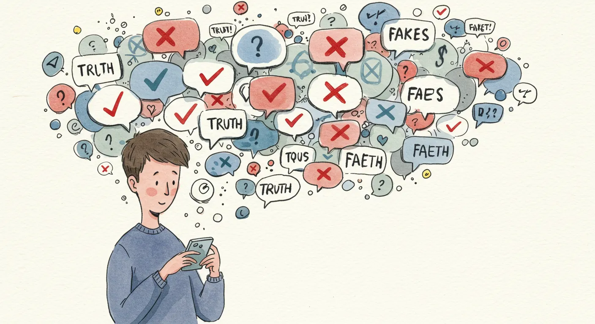生成AIの進化は、本物と見分けがつかないほど精巧な、偽の画像や動画（ディープフェイク）を、誰でも簡単に作り出せる時代をもたらしました。悪意のある人がこの技術を使えば、特定の人物が言ってもいないことを言っているかのような偽動画を作り、社会を混乱させることができてしまいます。
何が本当の情報で、何が嘘の情報なのか。その見極めが、これまで以上に難しくなっていきます。私たちは、インターネット上の情報を鵜呑みにせず、一度立ち止まって「これは本当だろうか？」と考える、冷静な視点を持つことが求められます。
第5章：AIと共に歩む未来 - 私たちにできること
AIの光と影、その両面を見てきました。では、私たちはこれから、このAIという新しい仲間と、どう付き合っていけばいいのでしょうか。最後に、AI時代を賢く、そして豊かに生きるためのヒントをお伝えします。
5-1. 私たちは「魔法のランプ」を手に入れた
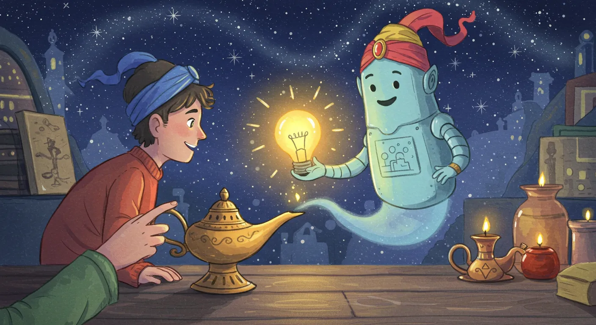現代のAIは、まるで物語に出てくる「魔法のランプ」のようです。ランプをこすれば、強力な魔人が現れて、私たちの願いを何でも叶えてくれます。しかし、魔人は自分では考えません。ただ、持ち主の「願い（命令）」に忠実に従うだけです。
もし持ち主が賢明な願いを伝えれば、世界を豊かにすることもできるでしょう。しかし、もし持ち主が浅はかで邪な願いを伝えれば、世界を混乱に陥れることもできてしまいます。AIも同じです。AIそのものに善悪はありません。その力をどう使うかは、すべて私たち人間、つまり「使い手」に委ねられているのです。
5-2. AIを「疑う」勇気と「使いこなす」知恵
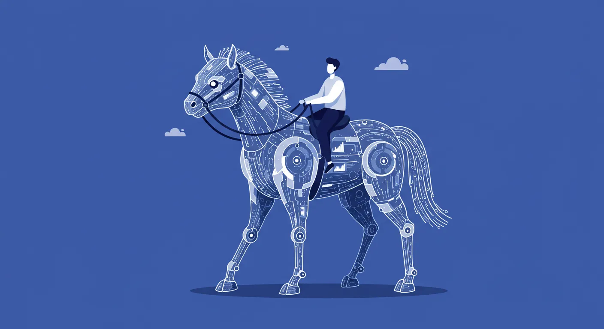この魔法のランプを正しく使うために、私たちには２つの心構えが必要です。
① AIの答えを、健全に「疑う」勇気
AIは、時々、もっともらしい顔で、平気で嘘をつくことがあります（これを「ハルシネーション」と呼びます）。AIが出してきた答えを100%鵜呑みにせず、「本当にそうなのかな？」「何か見落としはないかな？」と、一度立ち止まって自分の頭で考える癖をつけましょう。最終的な判断は、必ず人間が行うという姿勢が大切です。
② AIを恐れず、積極的に「使いこなす」知恵
一方で、AIを過度に恐れて、全く使わないのももったいないことです。AIは、私たちの仕事や学習をサポートしてくれる、最高のパートナーになり得ます。まずは、文章のアイデア出しや、調べ物の手伝いなど、簡単なことからで構いません。積極的にAIに触れて、「こういう聞き方をすると、良い答えが返ってくるな」という”コツ”を掴んでいくことが、AIを使いこなす一番の近道です。
5-3. AI時代に輝く、あなたの「人間らしさ」
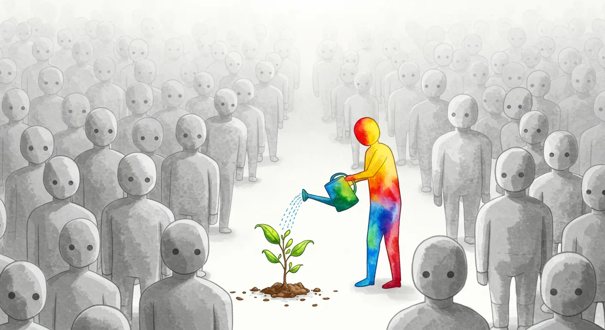AIがどれだけ進化しても、決して手に入れられないものがあります。それは、第1章でお話しした「身体」「心」「意識」から生まれる、人間らしさです。
誰かの痛みに共感する優しさ、ゼロから新しいものを生み出す創造性、何が正しくて何が間違っているのかを判断する倫理観…。こうした人間ならではの温かい価値は、AI時代において、ますますその輝きを増していくでしょう。AIにできることはAIに任せ、私たち人間は、この「人間らしさ」を、もっともっと磨いていくべきなのです。
5-4. 終わらない旅の始まり
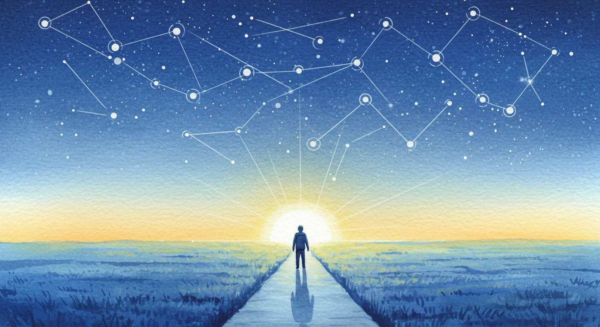このテキストを通して、AIという存在が、少しでも身近に感じられるようになっていれば嬉しいです。しかし、これはゴールではありません。AIの世界は、日進月歩、ものすごいスピードで進化し続けています。今日学んだ知識も、明日には古くなっているかもしれません。
大切なのは、AIの進化に関心を持ち続け、学び続ける姿勢です。このテキストが、あなたの「学びの旅」の、楽しくて心強い第一歩となったことを、心から願っています。
この記事の内容、AI博士に相談しませんか？
この記事を読んで生まれた疑問や、さらに深掘りしたい点はありますか？AI博士が、あなたの質問に優しく、そして詳しくお答えします。
AI博士の研究室へ相談に行く